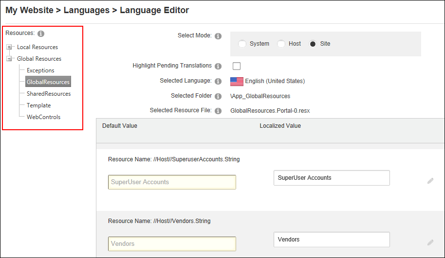
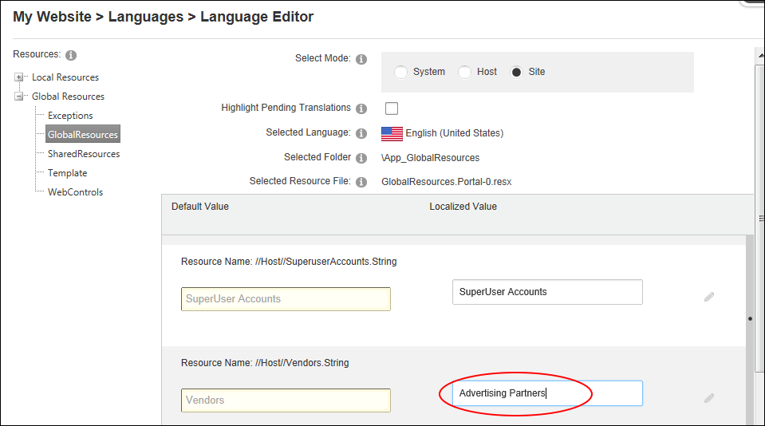
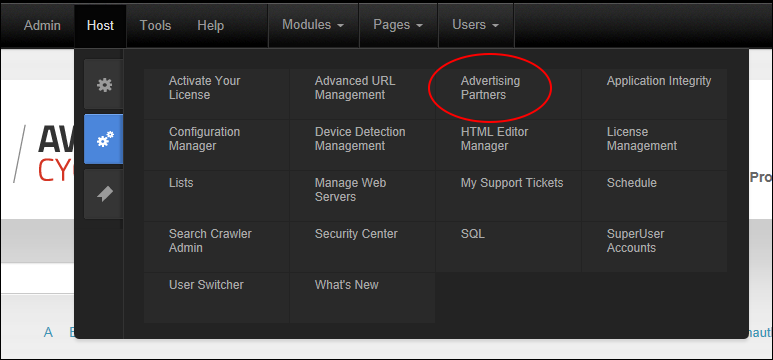

Editing Language Files (System, Host or Site)
How to edit the Language files for a single site, the host installation or the full DNN system using the Languages module. System and Host files can only be managed by SuperUsers. In the below example, the name of the Host > Vendors page will be changed to "Advertising Partners" for the current site only. Restricted to SuperUsers only.
- Navigate to Admin > Advanced Settings >
 Languages - OR - Go to a Languages module.
Languages - OR - Go to a Languages module.
- Select the Languages tab.
- Optional. In the Culture grid, located the required language.
- Click the Edit
 button beside one of these options to open the Language Editor page:
button beside one of these options to open the Language Editor page:- System: Select to edit the base file for a given language.
- Host: Select to create a custom version of the localized file for all sites within this installation.
- Site: Select to edit files for the current site only.

- Optional. At Select Mode, you can change which resource files you want to edit (as previously selected at step 4). E.g. System, Host or Site.
- Optional.In the Resources folder list, navigate to and select the required file from the below folders.
- Local Resources: Files that are related to specific Admin controls, modules (desktop modules), controls, installation and Host skins. In the below example, the Help message displayed when changing your password will be changed.
- Global Resources: Files that are used across the site. This is divided into GlobalResources and SharedResources. This is where you can edit the messages that are sent to users, error messages, site messages, etc.
- Site Templates: Select to edit the default, blank and mobile site templates for the selected language.
- Locate the required resource file. Note: If Paging is enabled, the file may be located on another page. See "Configuring Language Editor Settings"

- To edit a resource file, perform one of the following options:
- In the Localized Value text box, edit the text.
- OR -
- Click the Edit button. This displays the message "All unsaved changes will be lost if you continue. Are you sure you want to continue?"
- In the Editor, enter the new text ensuring you include the desired replacement tokens displayed at Default Value.

- Optional. To edit the subject associated with email messages, edit the associated Subject resource file which will be listed above the Body resource file.
- Repeat steps 5-9 to edit additional files.
- Click the Save Resource File button to save your changes.
- Click the Return button.
